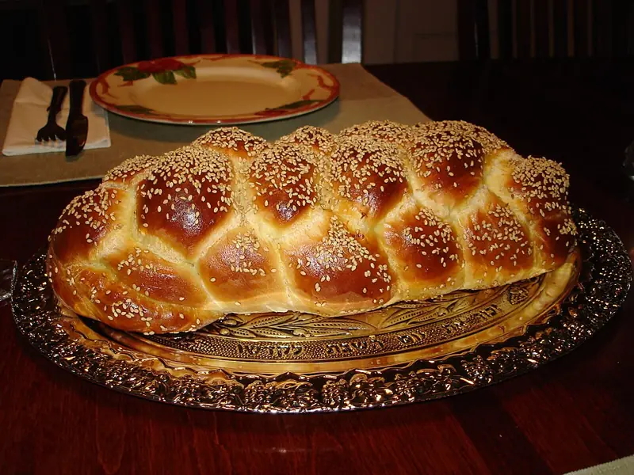

Фото: Aviv Hod, CC BY 3.0

Хала
Плетёный сдобный хлеб на яйцах без молочного, к субботе и праздникам
180 мин10 порц.270 ккал на порциюБ 8 · Ж 8 · У 40Еврейская кухня
Продукты на 10 порц.
- Мука пшеничная3,3 стак.
- Вода1 стак.
- Дрожжи сухие1 пакетик
- Яйцо куриное3 шт
- Сахар2 ст. л.
- Растительное масло4 ст. л.
- Соль1,5 ч. л.
- Кунжут по желанию1 ст. л.
Как готовить
- Растворите дрожжи и 1 ч. л. сахара в тёплой воде, оставьте на 10 минут до пенки.
- Соедините муку с остальным сахаром и солью. Добавьте дрожжи, 2 яйца и масло.
- Месите 10 минут до гладкого мягкого теста, которое не липнет к рукам.
- Накройте и оставьте в тёплом месте на 1-1,5 часа, пока тесто не вырастет вдвое.
- Обомните, разделите на 3 или 6 частей, раскатайте жгуты и заплетите косу.
- Переложите на противень с бумагой и дайте подняться ещё 40 минут.
- Смажьте взбитым третьим яйцом, посыпьте кунжутом.
- Выпекайте 30-35 минут при 180 °C (средний жар) до тёмно-золотого цвета. При постукивании снизу хала звучит глухо.
Совет. Хлеб без молока и масла сливочного, поэтому его можно подавать к мясу. Храните в пакете 2-3 дня, чёрствая хала хороша для гренок.